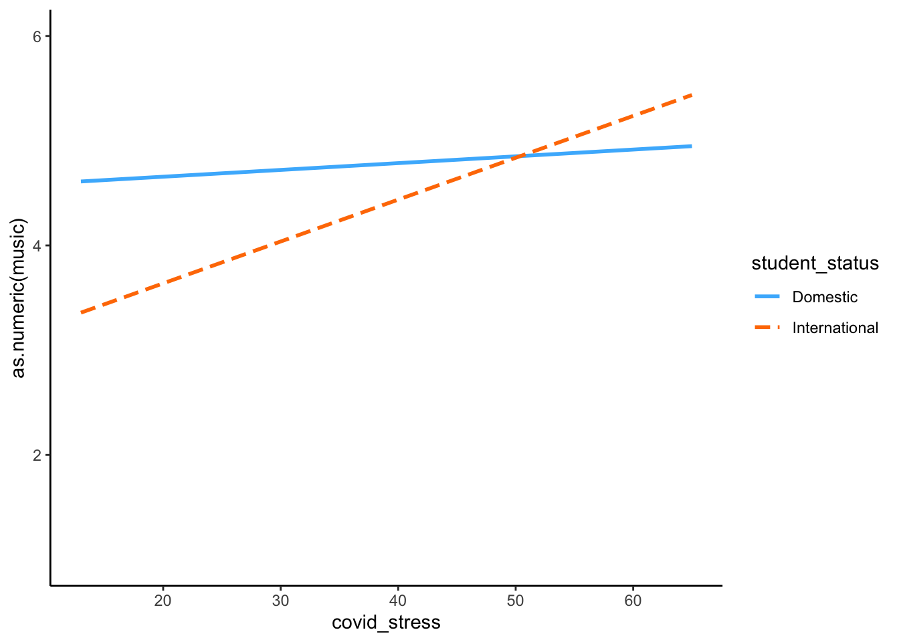
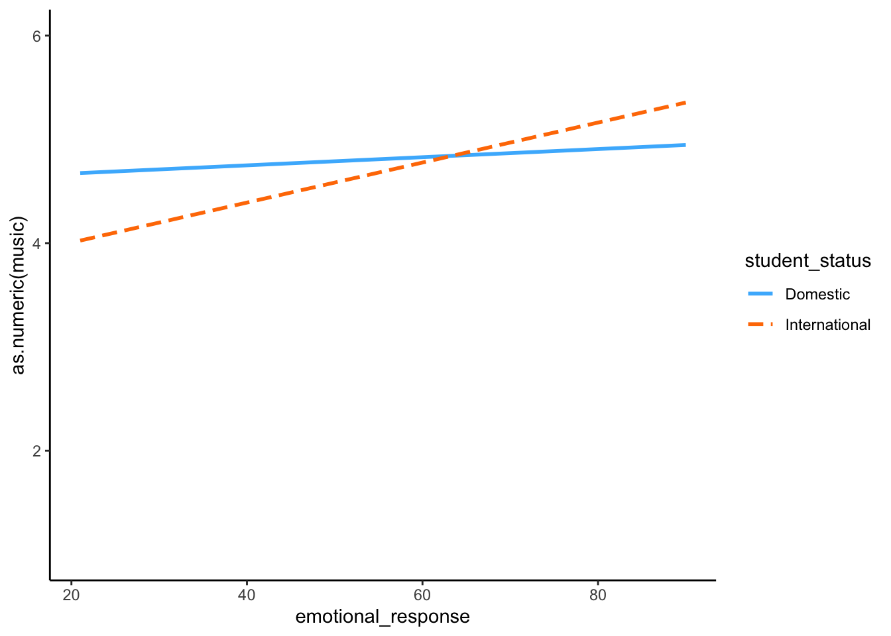
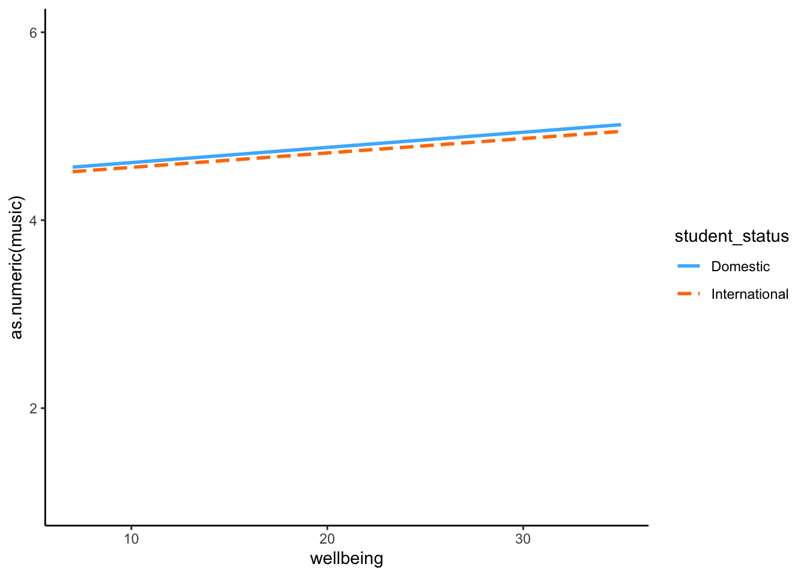
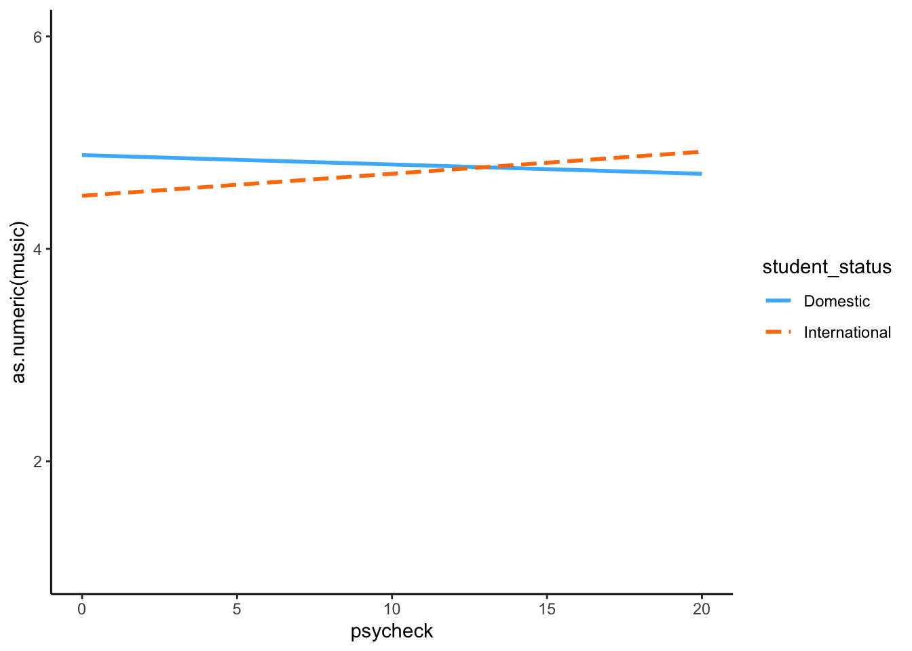

Last updated: 2020-07-02
Checks: 6 1
Knit directory: covid_music/
This reproducible R Markdown analysis was created with workflowr (version 1.6.2). The Checks tab describes the reproducibility checks that were applied when the results were created. The Past versions tab lists the development history.
The R Markdown is untracked by Git. To know which version of the R Markdown file created these results, you’ll want to first commit it to the Git repo. If you’re still working on the analysis, you can ignore this warning. When you’re finished, you can run wflow_publish to commit the R Markdown file and build the HTML.
Great job! The global environment was empty. Objects defined in the global environment can affect the analysis in your R Markdown file in unknown ways. For reproduciblity it’s best to always run the code in an empty environment.
The command set.seed(20200701) was run prior to running the code in the R Markdown file. Setting a seed ensures that any results that rely on randomness, e.g. subsampling or permutations, are reproducible.
Great job! Recording the operating system, R version, and package versions is critical for reproducibility.
Nice! There were no cached chunks for this analysis, so you can be confident that you successfully produced the results during this run.
Great job! Using relative paths to the files within your workflowr project makes it easier to run your code on other machines.
Great! You are using Git for version control. Tracking code development and connecting the code version to the results is critical for reproducibility.
The results in this page were generated with repository version b1c22dc. See the Past versions tab to see a history of the changes made to the R Markdown and HTML files.
Note that you need to be careful to ensure that all relevant files for the analysis have been committed to Git prior to generating the results (you can use wflow_publish or wflow_git_commit). workflowr only checks the R Markdown file, but you know if there are other scripts or data files that it depends on. Below is the status of the Git repository when the results were generated:
Ignored files:
Ignored: .RData
Ignored: .Rhistory
Ignored: .Rproj.user/
Untracked files:
Untracked: analysis/analyse_surveys.rmd
Untracked: analysis/describe_data.rmd
Untracked: data/adequately_sampled.rds
Untracked: data/covid_music_scored_vars.rds
Untracked: data/reduced_international_student_survey.rds
Unstaged changes:
Modified: analysis/_site.yml
Modified: analysis/index.Rmd
Modified: clean_data.R
Modified: explore_data.Rmd
Modified: reduced_international_student_survey.csv
Modified: reduced_international_student_survey.rds
Note that any generated files, e.g. HTML, png, CSS, etc., are not included in this status report because it is ok for generated content to have uncommitted changes.
There are no past versions. Publish this analysis with wflow_publish() to start tracking its development.
knitr::opts_chunk$set(message = FALSE,
warning = FALSE,
error = FALSE)survey_analysis_data <- read_rds(
"data/adequately_sampled.rds"
)In this section I provide the results of statistical analyses relating to the survey questions.
chi_sq_dat <- survey_analysis_data %>%
mutate(at_home = if_else(current_circumstance == "Staying at home for study/work",
TRUE,
FALSE)) %>%
select(at_home, student_status)Due to covid a number of different working situations were present. I am particulary interested in the proportions who were working from home rather than leaving the home. International students were more likely to be working from home than domestic students,
broom::tidy(table(chi_sq_dat)) %>%
knitr::kable(format = "html") %>%
kableExtra::kable_styling()| at_home | student_status | n |
|---|---|---|
| FALSE | Domestic | 67 |
| TRUE | Domestic | 236 |
| FALSE | International | 10 |
| TRUE | International | 89 |
means <- survey_analysis_data %>%
select(student_status,
covid_stress:psycheck) %>%
group_by(student_status) %>%
summarise_if(is.numeric,
list(mean, sd), na.rm = TRUE)
wellbeing_t <- apa::t_apa(t.test(formula = wellbeing ~ student_status, data = survey_analysis_data, var.equal = TRUE), format = "rmarkdown")*t*(387) = -0.91, *p* = .364, *d* = -0.09psycheck_t <- apa::t_apa(t.test(formula = psycheck ~ student_status, data = survey_analysis_data, var.equal = TRUE), format = "rmarkdown")*t*(386) = -0.96, *p* = .337, *d* = -0.10covid_emotions <- apa::t_apa(t.test(formula = emotional_response ~ student_status, data = survey_analysis_data, var.equal = TRUE), format = "rmarkdown")*t*(399) = -0.88, *p* = .378, *d* = -0.09covid_stress_t <- apa::t_apa(t.test(formula = covid_stress ~ student_status, data = survey_analysis_data, var.equal = TRUE), format = "rmarkdown")*t*(399) = -4.28, *p* < .001, *d* = -0.43International students (M = 21.2, SD = 4.89) and domestic students M = 20.73, SD = 4.19) had equitable wellbeing, as measured by the Warick Edinburgh, t(387) = -0.91, p = .364, d = -0.09.
International students (M = 11.15, SD = 5.5) and domestic students M = 10.56, SD = 5.06) had also had equitable scores on the PsyCheck t(386) = -0.96, p = .337, d = -0.10.
There was also no difference between international students (M = 52.73, SD = 13.4) and domestic students M = 51.43, SD = 12.41), t(399) = -0.88, p = .378, d = -0.09.
However, international students had higher COVID stress (M = 44.98, SD = 8.97) than domestic students (M = 40.35, SD = 9.43), t(399) = -4.28, p < .001, d = -0.43.
music_covid <- lm(
as.numeric(music) ~ as.numeric(covid_stress),
data = survey_analysis_data
)
music_covid_status <- lm(
as.numeric(music) ~ as.numeric(covid_stress) * as.factor(student_status),
data = survey_analysis_data
)
sjPlot::tab_model(music_covid,
music_covid_status,
show.aic = TRUE,
show.std = TRUE,
dv.labels = c("Music", "Music"))| Music | Music | |||||||||
|---|---|---|---|---|---|---|---|---|---|---|
| Predictors | Estimates | std. Beta | CI | standardized CI | p | Estimates | std. Beta | CI | standardized CI | p |
| (Intercept) | 4.25 | -0.00 | 3.75 – 4.75 | -0.10 – 0.10 | <0.001 | 4.53 | 0.04 | 3.97 – 5.09 | -0.07 – 0.15 | <0.001 |
| covid_stress | 0.01 | 0.10 | 0.00 – 0.02 | 0.00 – 0.20 | 0.044 | 0.01 | 0.05 | -0.01 – 0.02 | -0.06 – 0.17 | 0.347 |
|
student_status [International] |
-1.69 | -0.26 | -2.96 – -0.41 | -0.50 – -0.02 | 0.010 | |||||
|
covid_stress * student_status [International] |
0.03 | 0.28 | 0.01 – 0.06 | 0.04 – 0.52 | 0.021 | |||||
| Observations | 401 | 401 | ||||||||
| R2 / R2 adjusted | 0.010 / 0.008 | 0.030 / 0.022 | ||||||||
| AIC | 1243.391 | 1239.360 | ||||||||
interactions::interact_plot(music_covid_status,
pred = covid_stress,
modx = student_status) +
ggplot2::ylim(1,6) +
theme_classic()
music_covid_emotion <- lm(
as.numeric(music) ~ as.numeric(emotional_response),
data = survey_analysis_data
)
music_covid_emotion_status <- lm(
as.numeric(music) ~ as.numeric(emotional_response) * as.factor(student_status),
data = survey_analysis_data
)
sjPlot::tab_model(music_covid_emotion,
music_covid_emotion_status,
show.aic = TRUE,
show.std = TRUE,
dv.labels = c("Music", "Music"))| Music | Music | |||||||||
|---|---|---|---|---|---|---|---|---|---|---|
| Predictors | Estimates | std. Beta | CI | standardized CI | p | Estimates | std. Beta | CI | standardized CI | p |
| (Intercept) | 4.35 | 0.00 | 3.88 – 4.82 | -0.10 – 0.10 | <0.001 | 4.59 | 0.04 | 4.05 – 5.14 | -0.08 – 0.15 | <0.001 |
| emotional_response | 0.01 | 0.09 | -0.00 – 0.02 | -0.01 – 0.19 | 0.079 | 0.00 | 0.04 | -0.01 – 0.01 | -0.07 – 0.16 | 0.455 |
|
student_status [International] |
-0.97 | -0.16 | -2.04 – 0.09 | -0.38 – 0.07 | 0.072 | |||||
|
emotional_response * student_status [International] |
0.02 | 0.17 | -0.00 – 0.04 | -0.05 – 0.39 | 0.126 | |||||
| Observations | 401 | 401 | ||||||||
| R2 / R2 adjusted | 0.008 / 0.005 | 0.018 / 0.010 | ||||||||
| AIC | 1242.023 | 1241.986 | ||||||||
interactions::interact_plot(music_covid_emotion_status,
pred = emotional_response,
modx = student_status) +
ggplot2::ylim(1,6) +
theme_classic()
music_wellbeing <- lm(
as.numeric(music) ~ as.numeric(wellbeing),
data = survey_analysis_data
)
music_wellbeing_status <- lm(
as.numeric(music) ~ as.numeric(wellbeing) * as.factor(student_status),
data = survey_analysis_data
)
sjPlot::tab_model(music_wellbeing,
music_wellbeing_status,
show.aic = TRUE,
show.std = TRUE,
dv.labels = c("Music", "Music"))| Music | Music | |||||||||
|---|---|---|---|---|---|---|---|---|---|---|
| Predictors | Estimates | std. Beta | CI | standardized CI | p | Estimates | std. Beta | CI | standardized CI | p |
| (Intercept) | 4.45 | -0.00 | 3.91 – 4.99 | -0.10 – 0.10 | <0.001 | 4.45 | 0.01 | 3.80 – 5.10 | -0.10 – 0.13 | <0.001 |
| wellbeing | 0.02 | 0.06 | -0.01 – 0.04 | -0.04 – 0.16 | 0.229 | 0.02 | 0.06 | -0.01 – 0.05 | -0.06 – 0.18 | 0.300 |
|
student_status [International] |
-0.04 | -0.05 | -1.24 – 1.16 | -0.29 – 0.18 | 0.945 | |||||
|
wellbeing * student_status [International] |
-0.00 | -0.00 | -0.06 – 0.05 | -0.22 – 0.21 | 0.977 | |||||
| Observations | 389 | 389 | ||||||||
| R2 / R2 adjusted | 0.004 / 0.001 | 0.004 / -0.003 | ||||||||
| AIC | 1191.939 | 1195.732 | ||||||||
interactions::interact_plot(music_wellbeing_status,
pred = wellbeing,
modx = student_status) +
ggplot2::ylim(1,6) +
theme_classic()
music_psycheck <- lm(
as.numeric(music) ~ as.numeric(psycheck),
data = survey_analysis_data
)
music_psycheck_status <- lm(
as.numeric(music) ~ as.numeric(psycheck) * as.factor(student_status),
data = survey_analysis_data
)
sjPlot::tab_model(music_psycheck,
music_psycheck_status,
show.aic = TRUE,
show.std = TRUE,
dv.labels = c("Music", "Music"))| Music | Music | |||||||||
|---|---|---|---|---|---|---|---|---|---|---|
| Predictors | Estimates | std. Beta | CI | standardized CI | p | Estimates | std. Beta | CI | standardized CI | p |
| (Intercept) | 4.79 | -0.00 | 4.53 – 5.04 | -0.10 – 0.10 | <0.001 | 4.88 | 0.01 | 4.59 – 5.18 | -0.10 – 0.13 | <0.001 |
| psycheck | -0.00 | -0.00 | -0.02 – 0.02 | -0.11 – 0.10 | 0.923 | -0.01 | -0.04 | -0.03 – 0.02 | -0.16 – 0.08 | 0.495 |
|
student_status [International] |
-0.38 | -0.06 | -0.98 – 0.21 | -0.29 – 0.18 | 0.207 | |||||
|
psycheck * student_status [International] |
0.03 | 0.14 | -0.02 – 0.08 | -0.09 – 0.36 | 0.234 | |||||
| Observations | 388 | 388 | ||||||||
| R2 / R2 adjusted | 0.000 / -0.003 | 0.004 / -0.004 | ||||||||
| AIC | 1190.850 | 1193.224 | ||||||||
interactions::interact_plot(music_psycheck_status,
pred = psycheck,
modx = student_status) +
ggplot2::ylim(1,6) +
theme_classic()
sessionInfo()R version 3.6.3 (2020-02-29)
Platform: x86_64-apple-darwin15.6.0 (64-bit)
Running under: macOS Catalina 10.15.4
Matrix products: default
BLAS: /Library/Frameworks/R.framework/Versions/3.6/Resources/lib/libRblas.0.dylib
LAPACK: /Library/Frameworks/R.framework/Versions/3.6/Resources/lib/libRlapack.dylib
locale:
[1] en_AU.UTF-8/en_AU.UTF-8/en_AU.UTF-8/C/en_AU.UTF-8/en_AU.UTF-8
attached base packages:
[1] stats graphics grDevices utils datasets methods base
other attached packages:
[1] apa_0.3.3 kableExtra_1.1.0 naniar_0.5.0 ggpubr_0.2.5
[5] magrittr_1.5 forcats_0.5.0 stringr_1.4.0 dplyr_0.8.5
[9] purrr_0.3.4 readr_1.3.1 tidyr_1.0.2 tibble_3.0.0
[13] ggplot2_3.3.0 tidyverse_1.3.0 workflowr_1.6.2
loaded via a namespace (and not attached):
[1] nlme_3.1-144 fs_1.3.2 lubridate_1.7.4 insight_0.8.2
[5] MBESS_4.6.0 webshot_0.5.2 httr_1.4.1 rprojroot_1.3-2
[9] tools_3.6.3 backports_1.1.5 R6_2.4.1 sjlabelled_1.1.3
[13] DBI_1.1.0 colorspace_1.4-1 withr_2.1.2 tidyselect_1.0.0
[17] emmeans_1.4.5 compiler_3.6.3 git2r_0.26.1 performance_0.4.4
[21] cli_2.0.2 rvest_0.3.5 xml2_1.2.5 labeling_0.3
[25] bayestestR_0.5.3 scales_1.1.0 mvtnorm_1.1-0 digest_0.6.25
[29] minqa_1.2.4 rmarkdown_2.1 pkgconfig_2.0.3 htmltools_0.4.0
[33] lme4_1.1-23 dbplyr_1.4.2 highr_0.8 rlang_0.4.6
[37] readxl_1.3.1 rstudioapi_0.11 farver_2.0.3 generics_0.0.2
[41] jsonlite_1.6.1 sjPlot_2.8.3 Matrix_1.2-18 parameters_0.6.0
[45] Rcpp_1.0.4 munsell_0.5.0 fansi_0.4.1 lifecycle_0.2.0
[49] visdat_0.5.3 stringi_1.4.6 yaml_2.2.1 MASS_7.3-51.5
[53] grid_3.6.3 promises_1.1.0 sjmisc_2.8.4 crayon_1.3.4
[57] lattice_0.20-38 ggeffects_0.14.2 haven_2.2.0 splines_3.6.3
[61] pander_0.6.3 jtools_2.0.3 sjstats_0.17.9 hms_0.5.3
[65] knitr_1.28 pillar_1.4.3 boot_1.3-24 estimability_1.3
[69] ggsignif_0.6.0 effectsize_0.2.0 reprex_0.3.0 glue_1.3.2
[73] evaluate_0.14 modelr_0.1.6 nloptr_1.2.2.1 vctrs_0.2.4
[77] httpuv_1.5.2 cellranger_1.1.0 gtable_0.3.0 assertthat_0.2.1
[81] xfun_0.12 xtable_1.8-4 broom_0.5.5 coda_0.19-3
[85] later_1.0.0 viridisLite_0.3.0 statmod_1.4.34 interactions_1.1.3
[89] ellipsis_0.3.0